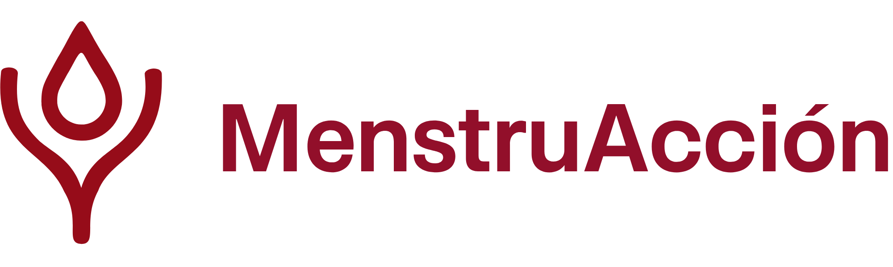
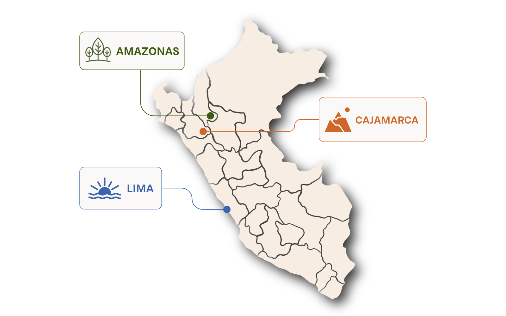

Solo productos
Sin educación ni seguimiento, el acceso puede quedarse en una entrega aislada.

Educación. Equidad. Oportunidad.
Construimos equidad, acceso y oportunidad mediante educación integral, productos sostenibles y acompañamiento comunitario.
MenstruAcción 2026
Lima, Cajamarca y Amazonas serán parte de un modelo que combina educación menstrual, sexual y financiera con productos reutilizables y seguimiento.
La brecha de equidad
La pobreza menstrual no es solo falta de productos. También es falta de información, privacidad, salud, dinero, agua, apoyo y espacios seguros.
adolescentes falta al colegio durante su menstruación.
Ver fuente ↗reporta entornos escolares hostiles durante su periodo.
Ver fuente ↗no puede pagar productos básicos menstruales.
[PON EL LINK AQUÍ]Sin educación ni seguimiento, el acceso puede quedarse en una entrega aislada.
La información no alcanza si una niña no tiene productos, privacidad o apoyo para aplicar lo aprendido.
Hablar de síntomas sin mirar escuela, economía, agua y estigma deja fuera la realidad completa.
Lo invisible
El rastro
El sistema
La logística
Nuestra propuesta
Nuestro modelo integra educación, acceso, comunidad e incidencia para garantizar el derecho a una menstruación digna.
La información convierte miedo en lenguaje, síntomas en señales y vergüenza en conversación segura.
Los productos reutilizables reducen la dependencia mensual de productos desechables y alivian costos a largo plazo.
El acompañamiento posterior permite resolver dudas, cuidar el uso correcto y no abandonar a las beneficiarias.
Ciclo menstrual, anatomía básica, dolor, higiene, señales de alerta, mitos, tabúes y cuidado de productos sostenibles.
Pubertad, consentimiento, autonomía corporal, relaciones sanas, prevención, límites personales y proyecto de vida.
Costos reales de menstruar, ahorro, presupuesto, compra informada, mantenimiento de productos y herramientas de autonomía.
Por qué productos reutilizables
Un kit durable puede reducir el gasto mensual repetido y liberar recursos familiares.
La reutilización reduce la dependencia de productos de un solo uso y su carga ambiental.
Aprender a usar y cuidar productos exige conocer el cuerpo, la higiene y las señales de alerta.
Modelo en acción

Diagnóstico comunitario, estudio de desafíos menstruales, revisión de agua, hábitos, tabúes, bullying y necesidades específicas.
Talleres participativos, sesiones mixtas y diferenciadas, entrega de productos sostenibles, actividades prácticas y formación de embajadoras.
Línea de WhatsApp, seguimiento a 3, 6 y 9 meses, encuestas, acompañamiento, soporte educativo y continuidad comunitaria.
Impacto y voces
En 2023, el piloto en Puente Piedra mostró que una intervención puede cambiar la forma en que las participantes entienden su cuerpo, su cuidado y su futuro.
9.8/10
9.7/10
8.3/10
9.9/10
“
Quiénes somos
Somos un equipo interdisciplinario organizado en cinco áreas para convertir investigación, logística, cuidado, comunicación y alianzas en acción territorial.
personas voluntarias
áreas de trabajo
macroregiones del Perú
Diseño curricular, implementación escolar, facilitación y adaptación comunitaria.
Diagnóstico, reportes, evidencia, evaluación, sostenibilidad ambiental y aprendizaje institucional.
Seguimiento, cuidado, rutas de apoyo, espacios seguros y acompañamiento posterior.
Narrativa pública, campañas, redes, materiales visuales y movilización comunitaria.
Presupuesto, donaciones, procesos institucionales, articulación legal y alianzas estratégicas.
Aquí podremos añadir tarjetas por persona con foto, nombre, área, región y una frase breve. Por ahora queda listo el espacio para crecer sin saturar la página.
Centro de recursos
Este será el espacio para publicaciones breves del equipo de Investigación y Sostenibilidad, guías para comunidades, reportes de campo y materiales educativos.
Formato sugerido
Así el centro no se vuelve solo un blog, sino una biblioteca viva para colegios, donantes, voluntarias y aliadas.
Por: Equipo de Investigación y Sostenibilidad
Una nota para traducir evidencia científica en preguntas claras para comunidades, colegios y donantes.
PróximamentePor: Nombre de autora / Área
Un análisis sobre acceso, educación, seguimiento y el riesgo de intervenciones de corto plazo.
PróximamentePor: Nombre de autora / Área
Una entrada sobre cómo el territorio cambia las posibilidades reales de una menstruación digna.
PróximamenteAliados y patrocinadores
Gracias a esta red, MenstruAcción puede llegar a tres colegios en Lima, Cajamarca y Amazonas con respaldo, productos y conocimiento.
Patrocinador principal del proyecto 2026.
Institución universitaria que respaldó la postulación.
Institución vinculada al liderazgo y desarrollo original de MenstruAcción.
Aliado local para productos menstruales sostenibles y culturalmente pertinentes.